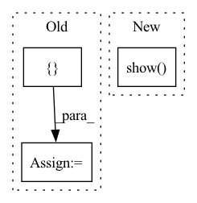

Pattern ID :3729

Before Change
def main():
symbols = [0, 1, 2, 3, 4, 5, 6, 7, 8, 9, 10, 11, 12]
// subplot
fig = make_subplots(rows=1, cols=2, subplot_titles=("Plot 1", "Plot 2"))
After Change
// errorbar
fig = px.scatter(x=[1, 2, 3], y=[1, 4, 9], error_y=[1, 1, 1])
fig.show()
if __name__ == "__main__":
In pattern: SUPERPATTERN
Frequency: 3
Non-data size: 3
Instances
Fragment ID: 13959781
Project Name: microsoft/archai
Commit Name: 4bf2e26eb405c061413eb2b282c2ca914cc13859
Time: 2022-12-16
Author: dedey@microsoft.com
File Name: scripts/misc/test_plotly.py
M Class Name: AnonimousClass
N Class Name: AnonimousClass
M Method Name: main(0)
N Method Name: main(0)
M Parent Class:
N Parent Class:
M File Name: scripts/misc/test_plotly.py
N File Name: scripts/misc/test_plotly.py
M Start Line: 11
M End Line: 11
N Start Line: 39
N End Line: 40
'>
Before Change
result = load_results(filename).sort_values(by="pVar", ascending=False)
best_result = result.iloc[:3]
cols_oi = [
"n_encoder_steps",
"n_units",
"encoder_type",
"dt",
"pVar",
]
filtered_result = format_table(
result,
After Change
for dataset_name in [
"timeSeries_2020_12_16_cr3_df.npy"
]:
box_plot_on_metric(
result, "pVar",
dataset_name=dataset_name,
dict_param_name=dict_param_name,
dict_param_surname=dict_param_surname,
value_rename=value_rename,
plot_layout=plot_layout,
).show()
metric_per_variable_pairwise(
result, "pVar",
dataset_name=dataset_name,
dict_param_name=dict_param_name,
'>
Fragment ID: 13959780
Project Name: neurotorch/neurotorch
Commit Name: 6afb39a78b71fd73d0b9574087ed3e662765431d
Time: 2022-08-24
Author: 50332514+JeremieGince@users.noreply.github.com
File Name: applications/time_series_forecasting_spiking/generate_figures.py
M Class Name: AnonimousClass
N Class Name: AnonimousClass
M Method Name: gen_autoencoder_figures(1)
N Method Name: gen_autoencoder_figures(1)
M Parent Class:
N Parent Class:
M File Name: applications/time_series_forecasting_spiking/generate_figures.py
N File Name: applications/time_series_forecasting_spiking/generate_figures.py
M Start Line: 111
M End Line: 175
N Start Line: 112
N End Line: 183
'>
Before Change
all_logs.append(logs)
logs = pd.concat(all_logs)
fig, ax = plt.subplots()
colors = ["red", "green", "blue", "cyan", "orange", "yellow", "purple"]
for name, group in logs.groupby("uid"):
group.plot.line(x="epoch", y="top_1", ax=ax)
plt.show()
After Change
fig, ax = plt.subplots()
for name, group in logs.groupby("uid"):
group.plot.line(x="relative_time", y="top_1", ax=ax)
plt.show()
print(logs)
import pdb; pdb.set_trace()
print(logs)
'>
Fragment ID: 13959779
Project Name: libffcv/ffcv
Commit Name: 2aff109675152007b72dd584d2cfb5f9b83de065
Time: 2021-11-09
Author: engstrom@csail.mit.edu
File Name: examples/imagenet_collect.py
M Class Name: AnonimousClass
N Class Name: AnonimousClass
M Method Name: main(1)
N Method Name: main(1)
M Parent Class:
N Parent Class:
M File Name: examples/imagenet_collect.py
N File Name: examples/imagenet_collect.py
M Start Line: 46
M End Line: 46
N Start Line: 45
N End Line: 55